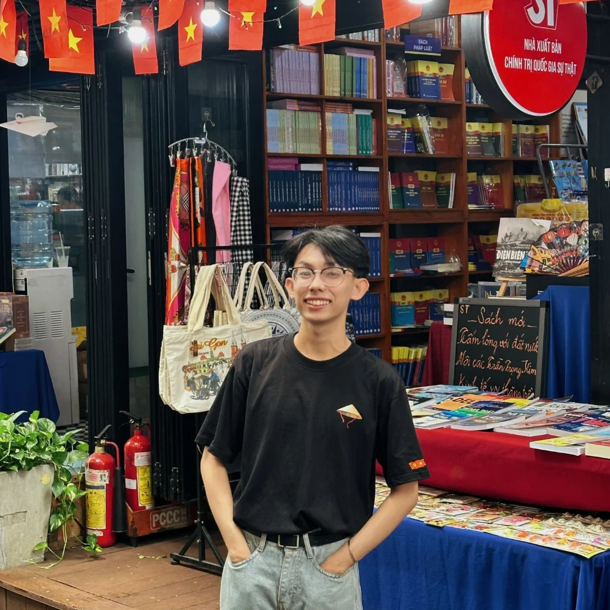

TRANG TÍN NHIỆM
Học vấn:
Trường THPT Chuyên Thoại Ngọc Hầu (2022 - 2025)
Chuyên Tin
- Á khoa môn chuyên Kỳ thi tuyển sinh 10 với số điểm 46,75/50
- Học sinh xuất sắc nhất khối 12 năm học 2024-2025
Trường Đại học Khoa học tự nhiên, ĐHQG TP. HCM (2025 - nay)
Ngành Công nghệ thông tin (chương trình Tăng cường tiếng Anh)
Hoạt động:
Gin-House Education Organization (2021 - nay):
The Nextgen Leaders 2024: Training Program
-
Trưởng ban Kỹ thuật:
Thiết kế vật phẩm tổ chức, ấn phẩm truyền thông và hồ sơ sự kiện.
-
Thành viên ban Đào tạo:
Là mentor cho nhóm 10 người tham gia chương trình; hỗ trợ kết nối, nhắc nhở tiến độ và theo dõi timeline chương trình.
Ngoài ra còn là thành viên BTC, Staff của các chương trình:
- The Nextgen Leaders 2024: Saigon Summit
- Saigon Youth Program 2022
- Youth Program March 2022: Communication & Storytelling Skills
- Youth Program December 2021: Design Thinking
Đội Thanh niên tình nguyện trường THPT Chuyên Thoại Ngọc Hầu (2022 - 2023):
Thành viên Ban Hậu cần:
- Phụ trách sắp xếp, hỗ trợ hậu cần trong các buổi lễ và hoạt động của nhà trường
- Tham gia hoạt động bán hoa đăng từ thiện dịp Trung thu 2022
- Tham gia chiến dịch Tiếp sức mùa thi: Tuyển sinh 10 và THPTQG 2023
Thành tích:
- Giải Ba HSGQG môn Tin học 2024 & 2025
- Giải Ba ICPC National 2024
- Giải Nhì bảng C1 vòng Chung kết Tin học trẻ Toàn quốc 2024